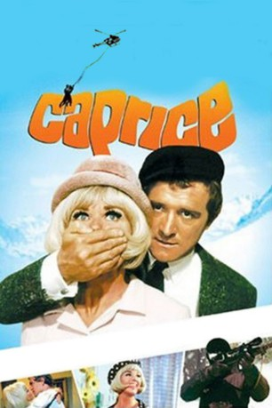

IMDB-Wertung: 5.6 / 10
IMDB-Wertung: 5.6 / 10  Metascore:
Metascore: 
In diesem Comedy- Thriller geht es um Patricia Foster, die in arge Schwierigkeiten gerät, als sie eine geheime Kosmetik- Formel an eine konkurrierende Firma in Paris verkauft
 IMDB-Wertung: 5.6 / 10 Metascore:
In diesem Comedy- Thriller geht es um Patricia Foster, die in arge Schwierigkeiten gerät, als sie eine geheime Kosmetik- Formel an eine konkurrierende Firma in Paris verkauft
Jahr: 1967
Dauer: 97 Minuten
FSK: 12
Land: USA Studio: Twentieth Century-Fox Film CorporationTonspuren: DD2.0 - ,
Untertitel:
Auflösung: 1080p (1920x808) Größe: 8140 MB
Genre: Thriller, Komödie, Krimi
Regisseur: Frank Tashlin
Drehbuch: John Kohn, Frank Tashlin, Martin Hale, John Kohn, Bob Kane
Soundtrack: Frank De Vol
Darsteller:
 Richard Harris als Christopher White
Richard Harris als Christopher White Ray Walston als Stuart Clancy
Ray Walston als Stuart Clancy Jack Kruschen als Matthew Cutter
Jack Kruschen als Matthew Cutter Michael J. Pollard als Barney
Michael J. Pollard als Barney Larry D. Mann als Inspector Kapinsky
Larry D. Mann als Inspector Kapinsky Maurice Marsac als Auber
Maurice Marsac als Auber Fritz Feld als Swiss Innkeeper , uncredited
Fritz Feld als Swiss Innkeeper , uncredited George Wallace als Policeman , uncredited
George Wallace als Policeman , uncreditedDatei: X:\1967\Caprice (1967, FSK12, 1920x808).mkv seit 25.02.2016
Festplatte: HD 1900-1970
 Es gibt insgesamt 24 Filme in der Gruppe '1967'
Es gibt insgesamt 24 Filme in der Gruppe '1967'